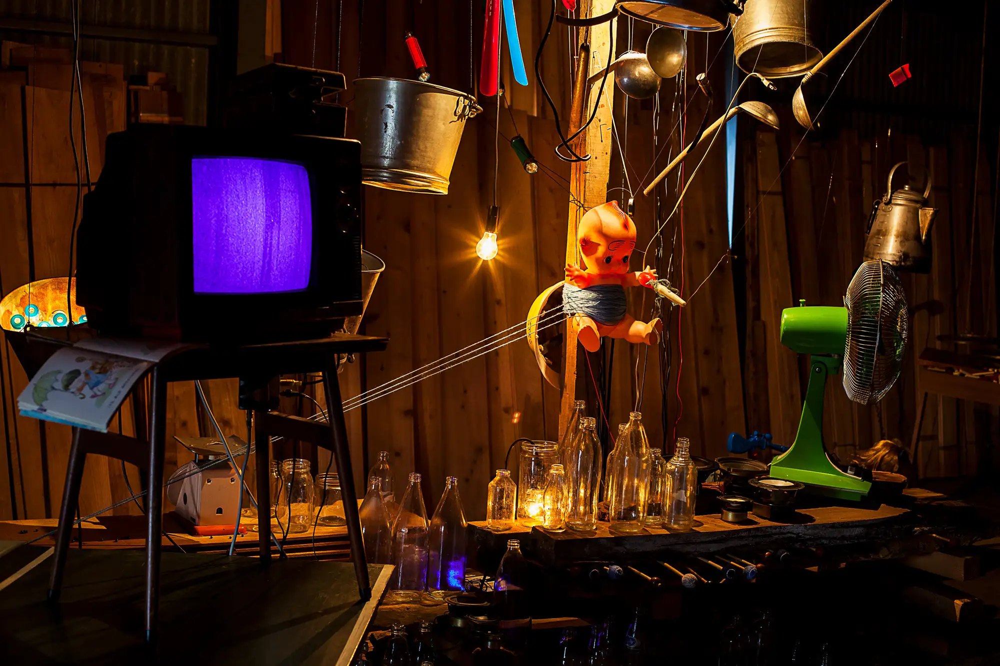
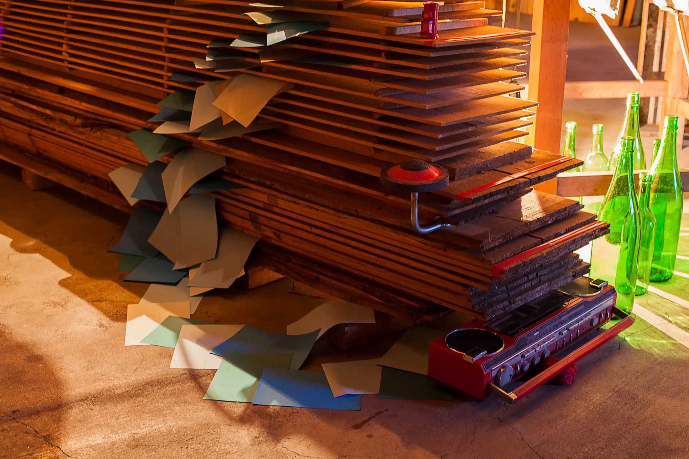
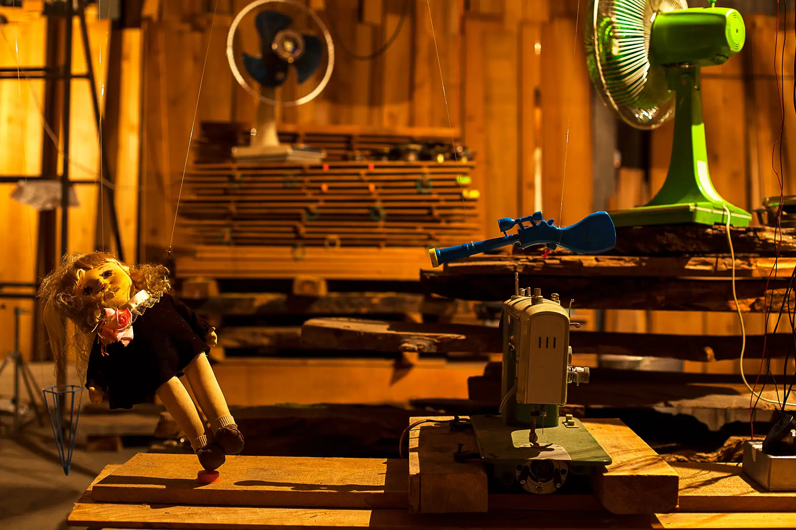
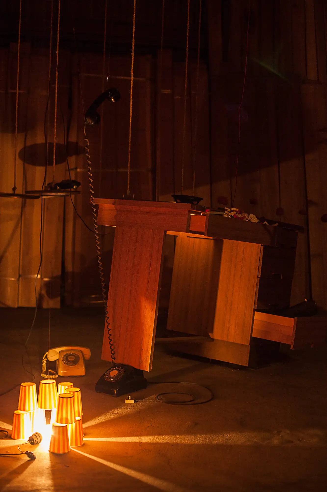
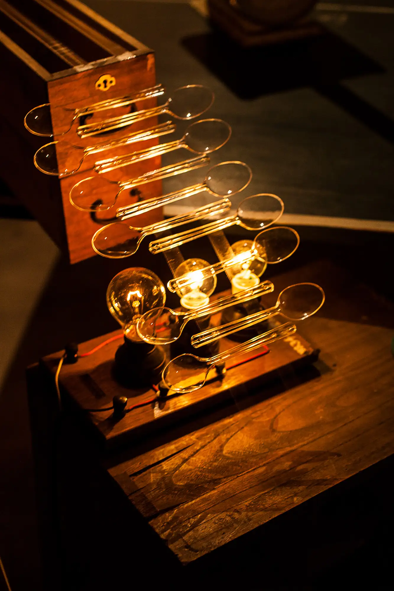

chasing little pasts
2015
NAKANOJYO BIENNALE 2015, Gunma JAPAN
Mixed media: Discarded objects and waste materials collected from the streets, field recordings collected in the city, incandescent bulb, sound system, light controller
sound composition by Tatsumi Ryusu
An interactive installation about memory and forgetting. Through flickering lights and transforming spaces, it simulates the process of memory fading, exploring the significance of forgetting in human cognition. This work creates an immersive environment where light becomes a metaphor for consciousness, blinking in and out of existence like memories that surface and disappear. The installation invites viewers to contemplate the paradoxical nature of forgetting as both loss and liberation.




